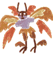
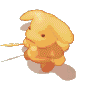

| 概要 | 情報 | アイテム一覧 |
| 敵キャラ一覧 | ステージ一覧 | 夢幻迷宮について |
| 攻略チャート | Zwei!! 攻略へ |
アイテムの種類
| ザコ1 | ザコ2 | ザコ3 | ザコ4 | ボス |
Zwei!!の敵キャラ一覧 「ボス」
| 名 前 | 画 像 | HP | 攻 撃力 | 耐 性 | 弱 点 | メ モ | 持 ち物 | 出 現場所 | 詳 細情報 | 通 し番号 |
| ダークフット |  |
2000 | 20 | 風 | 『森の巨人』とも呼ばれるモンスター。 鋭い爪は伸縮自在。踊りで魔法を発動する。 |
たこ焼き | カヤパの森Lv4奥 | 夜叉の舞 修羅の舞 怒怒怒 突き 広範囲攻撃 魔法 夜叉の舞で使われる、赤い水晶を早めに破壊すると、攻略しやすくなります。ポックルで攻めれば何ら問題はありません。レベルが低いと、すぐにHPが無くな るので回復アイテムは持てるだけ持つ方がいいです。 修羅の舞は、画面左上の略図を見るとかわしやすくなります。 |
100 | |
| フェニックス | 8000 | 57 | 火 | 『火焔鳥』の名にふさわしい巨大な魔鳥。 再生能力を持っているのため、注意が必要。 |
焼き鳥 | ケノーピ火山Lv7奥 | 火の雨 突進 V字火柱 逃走 火の雨は無視して攻撃を続けた方が無難です。 突進は意地でも避けてください。小さな円を描くように回り続ければかろうじてよけられます。 V字火柱を使う前に飛び上がるので、フェニックスの真正面を向きましょう。 逃走を使われたら、ひたすら追いかけてください。敵のHPが回復してしまいます。 |
101 | ||
| レヴィアタン | 37500 | 156 | 水 | 『邪水龍』の名を持つ巨大モンスター。 魚の地を色濃く持つ龍で水を自在に操る。 |
アユ | パーヴェル庭園Lv11奥 | 津波警報 地震 突進 レーザー しっぽ攻撃 魔法 津波警報は、岩の影に隠れれば大丈夫です。 地震を起こす時は飛び上がるので、相手がいる向きと45度をなす方向へ進むとよけられます。 しっぽ攻撃と、レーザーもよけやすいはずです。 |
102 | ||
| ヒュドラ | 40000 | 140 | 地 | 『双頭の地竜』の異名で呼ばれる時もある。 尻尾から霧状に毒液を散布、敵を石化する。 |
ソーセージ | クロップ洞窟Lv16奥 | しっぽ攻撃(石化) 火炎放射 つぶて 魔法 しっぽ攻撃、有効範囲が非常に広いので注意してください。仮に石化した場合は、攻撃ボタンを連打して早く解除しないと、連続で食らう危険があります。 火炎放射はも威力が高いので注意してください。 つぶてはとにかく逃げ回ればいいのですが、ハマると連続でダメージを食らってしまいます。 基本的にピピロの風で逃げ回れば何とかなってしまいます。 |
103 | ||
| アークナイト | 90000 | 200 | 光 | どみにおんたちの長。 天界の番人だったが、魔王に操あられて狂える騎士と化した。 |
リンゴ | アプリエス神殿Lv18奥 |
ミリオンスター 盾破壊 アイン ツヴァイ ドライ シューティングスター (など) 体力が半分を下回ると、盾が壊れ、攻撃パターンが変化します。 シューティーングスターなどの突撃系の技は、食らってしまったら もはや逃れるすべはありません。あきらめましょう。 アイン、ツヴァイ、ドライは3回連続攻撃ですが、1回目をさけるこ とができれば、案外簡単に全てさけられます。 |
104 | ||
| デアボロス | 72000 | 576 | 火闇 | 巨大な鎌を振るう竜に似た闇の大魔獣。 巨大な魔力を用いて破壊の限りを尽くす。 |
レモン | エスピナ暗黒神殿Lv20奥 |
鎌 魔法 鎌(連続) ブレス(?) 那由他 虚円衝 虚無撃 吹き出しの出る技の場合、空から次々と攻撃され、範囲も広いので 無理のない程度によけましょう。 鎌は攻撃範囲が広く、連続で使われるとジリジリと追いつめられ、 あまり良い気分ではありません。 とにかく隙をついて攻撃するしかない敵です。 |
105 | ||
| ハンド | 195000 | 585 | 魔王ヴェスパーの両手。 同一の意志の下で動いているだけあって、連係プレイは抜群。 |
セルペンティナLv21奥 | 魔法 突進 クラッシュボム ホーリーエクステンョン 星がいっぱい プレス ておす召還 地面が発光 ポックル、ピピロどちらでもいけます。 クラッシュボムの発動中は無敵なので、取りあえず遠くへ非難しましょう。 ほーリーエクステンションの発動時はダメージを与えることができるので、ひるまずに攻撃を続けた方がいいです。 ておす召還中は、指で星のマークを描きます。ておすはあまり害がないのですが、邪魔なので早めに倒した方がいいです。 |
106 | ||||
| ヴェスパー |  | 380000 | 2000 | 光と闇の女神に背きし6人の堕天使の1人。 過去の巫女姫と聖騎士の手により封印される。 |
セルペンティナLv21奥 | マーズフィスト サターンブレス ムーンロゼッタ マーキュリーニードル 突進 ておす召還 魔法 画面から消えたら、突進してくる証拠です。2段階攻撃なので注意してください。ただし、突進が終わった後は好きができるのでちょうどよい攻撃チャンスです。 ておすは邪魔なので早めに倒しましょう。 落ち着いて攻撃すれば何とかなる相手です。 |
107 | |||
| 大火竜 | 21000 | 160 | 火 | 火を司る四大竜の1頭。 魔王に操られていた所を人間たちに封印された。 口癖は「ヒギャ!」 |
ダプネ砂漠Lv7奥 | ブレス 地震 火の粉の雨(火傷) 魔法 ずば抜けて強いと言うことはないので、落ち着いて対処しましょう。 空を飛んだ後に、踏みつぶしてくるので、それさえ防げば・・・なんとかなるかも。 ブレスは相手が向いている方向と垂直の向きへ逃げれば大丈夫です。 |
108 | |||
| 大水竜 | 30000 | 200 | 水 | 水を司る四大竜の1頭。 魔王に操られていた所を人間たちに封印された。 口癖は「ミギャ!」 |
トリポカ湖Lv14奥 | ブレス 地震 氷の雨(凍結) 魔法 凍結状態にする攻撃がやっかいです。固められて、踏みつぶされたら大変です。 凍結の対処さえしておけば、なんとかなるはずです。 ブレスは相手が向いている方向と垂直の向きへ逃げれば大丈夫です。 |
109 | |||
| 大地竜 | 854100 | 2400 | 地 | 地を司る四大竜の1頭。 魔王に操られていた所を人間たちに封印された。 口癖は「チギャ!」 |
聖地クラプロートLv31奥 | ブレス 落石連発(石化) 地震 魔法 おすすめはピピロの光です。ブレスを放つ素振りを見せたら、とにかく遠くへ逃げて、魔法を連発します。2～3回ヒットしたらまた何かしらの行動を取るので、逃げる。ヒット&アウェイですね。 どの攻撃も強烈なので、レベルを上げただけではどうにもなりません。龍神装備で身を固めて、ぴぴろで逃げ回った方がいいです。 管理人はぴぴろ+風の魔法で行きました。何を食らっても大打撃なので、集中して挑みましょう。ペットのレベルもしっかり上げて、設定は回復優先に。 |
110 | |||
| 大風竜 | 65000 | 650 | 風 | 風を司る四大竜の1頭。 魔王に操られていた所を人間たちに封印された。 口癖は「カギャ!」 |
ヒポリタの丘Lv21奥 | ブレス 雷連発(まひ) 地震 魔法 レベルを上げてとまひ対策さえすれば、強い敵ではありません。 強いて言えば、踏みつぶされないように。 ブレスは相手が向いている方向と垂直の向きへ逃げれば大丈夫です。 |
111 | |||
| ナイトロード | 60000 | 500 | 闇 | 悪魔とは異なる力を持つ吸血鬼たちの王。 魔法大戦よりも昔に、地中深くに封印された。 |
冒険の翼 | スピリ古代迷宮 | ひっかき 魔法 回転(体当たり) パラレイザー レベルが低ければ強い敵ですが、スピリのスペシャルに入れる財力がある時期では敵ではないでしょう。 ただし、60秒以内に倒さなねばならないことを、忘れずに。 |
112 | ||
| エルダー | (1周目)585000 (2周目)675000 (3周目)1125000 (4周目)3275000 |
1300 | 風闇 | 通称･ブラザーズ兄。 兄弟で世界征服を企むはぐれ悪魔の兄貴分。 落ち着きのない性格。 |
レモン イチゴ マスカット メロン |
カヤパの森Lv20奥 | 回転攻撃 合体 ブラザーサイクロン 魔法 基本的に怖い敵ではありません。ピピロの闇で攻めていれば何とかなってしまいます。 ブラザーサイクロンは追尾型なので、取りあえず逃げましょう。 頭の23の文字が涙を誘いますね。 |
113 | ||
| ジュニア | (1周目)585000 (2周目)675000 (3周目)1125000 (4周目)3275000 |
1300 | 風闇 | 通称･ブラザーズ弟。 兄弟で世界征服を企むはぐれ悪魔の弟分。 向こう見ずな性格。 |
ソーセージ ひれステーキ チキン 骨付き肉 |
カヤパの森Lv20奥 | とぅっ(突進) 投げ ブラザーサイクロン 魔法 基本的に怖くありません。ピピロの闇で攻めていれば何とかなってしまいます。 合体している時は、程良い距離を保ちながら逃げると、連続HITをねらえます。 頭の01010の文字が涙を誘いますね。 |
114 | ||
| センチネル | (1周目)390000 (2周目)450000 (3周目)750000 (4周目)1690000 |
1300 | 火闇 | 魔法大戦時に人間に作られた大型戦闘人形。 しかし魔の力によって暴走、封印された。 |
2000PN 5000PN 1万PN 10万PN |
ケノーピ火山Lv20奥 | 爆風 追跡レーザー 突進 魔法 とにかく、戦いにくいモンスターです。ピピロの闇だと攻撃があまり当たりません。かといって、ポックルは危険すぎます。取りあえず、管理人はピピロの風 で攻めてみました。 と、言うよりも逃げ回っていました。 |
115 | ||
| アスラタケ |  |
(1周目)130000 (2周目)225000 (3周目)375000 (4周目)450000 |
1300 | 地闇 | 魔王によって作られたキノコ型戦闘生命体。 自分の分身を無限に増やして襲ってくる。 |
しめじ なめこ しいたけ まつたけ |
クロップ洞窟Lv20奥 | アルティメットデルタ 分身 分身解除 魔法 爆弾キノコ ボス的存在は子分の方。奴を倒さないことにはどうにもなりません。耐性を持っていますが、倍攻撃すればいいだけなので、ピピロの闇で逃げながら攻めましょ う。 子分を倒し、アスラタケ本体を攻撃している時は、相手のHP残量に注意し、自爆に巻き込まれないようにしましょう。4周目に巻き込まれるとHPが最高でも 即死です。 アルティメットデルタ発動時には子分が下を向いてスライドするように移動するので、右上か左上へ逃げてください。 |
116 | |
| クラーケン | (1周目)195080 (2周目)225100 (3周目)300120 (4周目)564700 |
1600 | 水 | 地獄の海に住んでいた巨大イカにして海の王。 魔法大戦時にこの世界へ召喚された。 |
するめ | パーヴェル庭園Lv20奥 | 突進 墨吐き 津波(?) 足でたたく 魔法 はじめは足の2カ所しか攻撃できません。しかも、ダメージが1とか2。 しばらくすると、足が取れて本体に攻撃できるので、相手の動きに注意しながら攻撃しましょう。ピピロの闇がかなり使えます。 |
117 | ||
| アスモデウス | 444000 | 1980 | 地 | 四魔将にして地の悪魔。 魔法大戦時に、シルフによって封印された。 |
10万PN 1万PN |
クロップ洞窟Lv28奥 | 土煙(石化?) 魔法 アースエナジー ロックンスコール ゴー レベルは28なくても大丈夫かもしれません。ピピロの闇で逃げ回ると楽です。 登場時点ではツチノコしか出てこないので、とりあえず攻撃しておきましょう。しばらくすると、本体が出てきます。 ゴーはツチノコが追いかけてきますが、タイミングをつかまないとダメージを受けてしまいます。 アースエナジーはよく分からないのですが、エフェクトがやばそうなのですぐに逃げましょう。 ロックンスコールは実は攻撃のチャンスです。 |
118 | ||
| ベリアル | 854100 | 2400 | 火 | 四魔将にして火の悪魔。 魔法大戦時に、ウンディーネによって封印された。 |
10万PN 1万PN |
ケノーピ火山Lv29奥 | ダッシュ(低速) ダッシュ(高速) 地震 魔法連射 魔法 ピピロの闇で逃げ回るのが有効でしょう。 高速ダッシュをする前に、足場をならすような仕草をします。しかし、魔法連射などの他の行動を取ってからダッシュする場合もあります。タイミングさえ間違えなければ、簡単によけられます。 地震を起こす前に、前足を高く上げるので、とりあえず逃げてください。 |
119 | ||
| アスタロス | 1020000 | 1300 | 水 | 四魔将にして水の悪魔。 魔法大戦時に、サラマンダーによって封印された。 |
10万PN 1万PN |
パーヴェル庭園Lv31奥 | どぉぉぉりゃぁぁ!!! 切り刻んでくれるわぁ! 冷凍ビーム フリージング・アロー ブーメラン 魔法 ピピロの闇で逃げ回れば簡単に倒すことができます。 基本的にどの技も使用する前のモーションというものはありません。とはいえ、一撃一撃がさほど強力ではない(どぉぉぉりゃぁぁ!!!以外)ので、よけられなくても大丈夫です。 冷凍ビームはよける方法があるみたいですが、わかりにくいので使うようなら遠くへ逃げましょう。 |
120 | ||
| ベルゼバブ | 1272000 | 2700 | 風 | 四魔将にして風の悪魔。 魔法大戦時に、ノームによって封印された。 |
100万PN 1万PN |
カヤパの森Lv33奥 | 浮上 ビーバー(数発) ビーバー(連発) 稲妻 プレス 魔法 落下 カッター ビッグ・バン 取りあえず、可能な限り強力な装備品を持つべきです。水の巻物を装備、ペットは「攻撃するな」に指示でないと危ないですよ。 管理人は、ピピロの土でコンボをため、着地中はため攻撃を連発していました。 注意点としては、ビッグバンには絶対に触れないことです。あれに触れて生きていた者はいません。 |
121 | ||
| こぼるたんX |  | 4000000 | 2750 | 毒凍石麻 呪乱爆 |
史上最強のモンスター。 神の領域まで自らを高め、魔王に匹敵する力を手に入れた覇者。 |
プロマイド1 | カヤパの森､こぼるとの森2 | (気合いと根性で。スリープラトンを連発すれば勝てるかも・・・) | 122 | |
| 名 前 | 画 像 | HP | 攻 撃力 | 耐 性 | 弱 点 | メ モ | 持 ち物 | 出 現場所 | 詳 細情報 | 通 し番号 |
情報が入り次第、随時更新します
アイテムの種 類
| ザコ1 | ザコ2 | ザコ3 | ザコ4 | ボス |
| 概要 | 情報 | アイテム一覧 |
| 敵キャラ一覧 | ステージ一覧 | 夢幻迷宮について |
| 攻略チャート | Zwei!! 攻略へ |
Zwei!!
| 目次へ戻る | ページの上部へ |